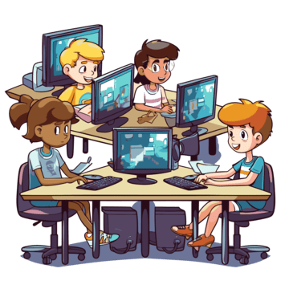
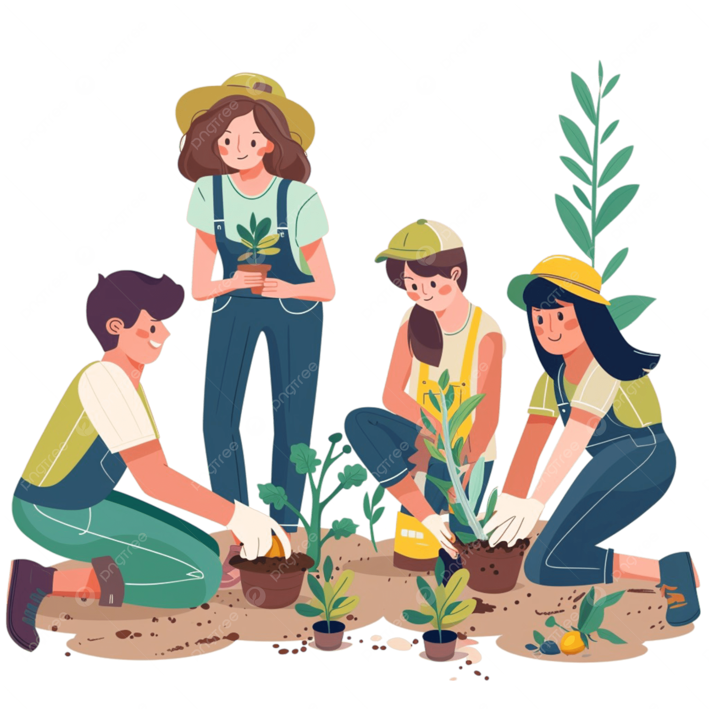

Robótica
Robô Seguidor de Linha
Projeto que integra eletrônica, programação e mecânica para construir um robô autônomo.
Conheça as iniciativas desenvolvidas no campus.
Robótica
Projeto que integra eletrônica, programação e mecânica para construir um robô autônomo.

Web
Site com notícias, fotos e agenda da turma, desenvolvido em HTML e CSS.

Sustentabilidade
Espaço de cultivo coletivo que envolve estudantes, servidores e famílias.
Cultura
Encontros quinzenais para discussão de livros, contos e poesias.